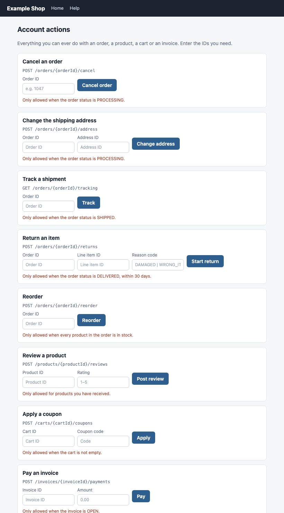
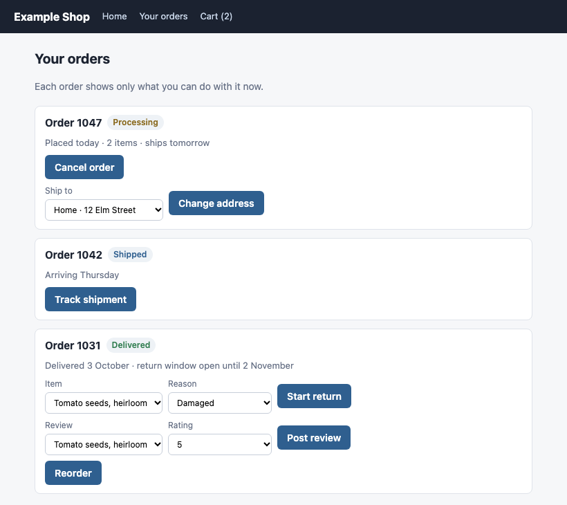

The dynamic OpenAPI client, checked
Nobody would give a customer a web page that lists every form on the site, blank, with the rules in small red print. An OpenAPI description is that page, handed to every program. This is about why, what it costs, and what HEART does instead.
The page with every form on it
Picture a shop that puts every account action on one page. Two links at the top, then eight forms: cancel an order, change an address, track a shipment, return an item, reorder, review a product, apply a coupon, pay an invoice. Every form is blank. Every one asks for an ID. Under each is a red sentence saying when it would work.


The page on the left is accurate. Every form works, if you fill it in right, for an order in the right state. It's still terrible design, and any designer would say why:
- It makes you supply what it already knows. Your order numbers, your addresses, the items you bought.
- It makes you apply the rules. "Only allowed when the order status is PROCESSING" is your job to check.
- It makes you guess valid values. A reason code typed by hand, a rating typed by hand.
- It teaches by failure. Cancel an order that already shipped, and you learn the rule after you pressed the button.
- It shows you everything. Coupons and invoices sit beside your orders whether you have a cart or an invoice or not.
The page on the right is how the Web is designed. You enter at a home page that offers a few relevant choices. Each choice leads to a page that narrows or expands into more choices, constrained by where you came from and what you picked. IDs are carried by the links, not typed. Choices come as lists of valid values. A button that wouldn't work isn't there.
Roy Fielding put that design principle into a definition, in a comment on his 2008 post:
"When I say hypertext, I mean the simultaneous presentation of information and controls such that the information becomes the affordance through which the user (or automaton) obtains choices and selects actions."
Roy T. Fielding, comment on "REST APIs must be hypertext-driven", 2008. Note the words "or automaton".
The OpenAPI description is the page with every form on it
Now hand the same shop to a program: a generated client, a dashboard, or an AI agent. The usual way is an OpenAPI description. Read it next to the left-hand page, card by card, and they turn out to be the same thing.
| On the page for people | In the OpenAPI description |
|---|---|
| A form card, "Cancel an order" | An operation, POST /orders/{orderId}/cancel |
| A blank "Order ID" field | A path parameter, orderId, "required": true |
| The red sentence about when it works | The operation's description: "Only allowed when the order status is PROCESSING." |
| A free-text "Address ID" field | A request body property, {"type": "string"}, with no idea which addresses are yours |
| Eight forms on one page, for everyone | Every operation on every resource, in every state, in one document |
| Pressing Cancel on a shipped order | 409 Conflict |
"/orders/{orderId}/cancel": { "post": {
"operationId": "cancelOrder",
"parameters": [ { "name": "orderId",
"in": "path", "required": true } ],
"description": "Only allowed when the
order status is PROCESSING."
} }
// … and seven more cards,
// for every order, in every state{ "id": 1047, "status": "PROCESSING",
"_forms": {
"shop:cancel": { "title": "Cancel order",
"method": "POST",
"_links": { "target": {
"href": "/orders/{id}/cancel",
"templated": true } },
"hr:templatePointers": { "id": "/id" } },
"shop:change-address": { … }
} }
// only what order 1047 allows nowA program reading the description has the same five problems the shopper had. It must find the IDs elsewhere. It must apply rules written as prose, or copy them into its code. It must guess valid values. It learns the rules from 409s. And it has to hold the whole catalog to act on one order.
For an AI agent this is literal. The catalog goes into its context, every operation, so it can pick one, and the rules it must obey arrive as sentences it has to interpret correctly every time. We measured the garden from this exhibit, a small API with eight operations on one kind of resource:
GET /openapi.json 13,174 bytes every operation, every state
GET /beds/2 (HEART, L0) 1,077 bytes this bed's state and its form
GET /affordance-sets/… 773–1,065 bytes one state's forms, sharedOne complete HEART answer is about a twelfth of the catalog, and the catalog grows with every operation the API adds, while the answer about one bed grows only with what that bed allows. Caching makes the catalog's bytes a once-per-release cost. The cost that stays is structural: every client re-derives "what can I do now" from "everything that could ever happen", on every turn.
Everything the request needs, and nothing it doesn't
A HEART form is the right-hand page for programs. It tells an agent, or a person, exactly what the request looks like, which parts are already known, and what may be chosen and within what limits. Here is a real form from the garden, under the release where watering gained an optional method:
{ "title": "Water the bed",
"description":
"Adds the given millilitres of water to each cell.",
"method": "POST",
"_links": { "target": {
"href": "/beds/{id}/actions/water-cell",
"templated": true } },
"hr:templatePointers": { "id": "/id" },
"schema": {
"type": "object",
"required": ["milliliters"],
"properties": {
"milliliters": {
"title": "Water per cell",
"type": "integer",
"minimum": 1, "maximum": 1000,
"examples": [250] },
"method": {
"title": "Method",
"enum": ["drip", "spray"],
"default": "drip" }
} } }- It's offered at allThe bed is planted. A frozen bed's answer has no such form, so there's no rule to read and no 409 to risk.
- Where it goes, without an ID field
hr:templatePointerssays the{id}comes from the bed's own/id. Deterministic code fills it; nobody types it and no model guesses it. - What must be supplied
requirednames the one field the caller has to provide. - Within what range
minimumandmaximumbound it;examplesgives a sensible value to start from. - From which fixed choices
enumlists the only valid methods, anddefaultsays what happens if you leave it out. - What it meansA title and description for a person, a relation name for code, the same words an agent reads to decide.
That's the drop-down page, as data. The server, which knows the state, does the work the catalog left to the client. And because each form arrives with the state it applies to, the client never trims anything: it draws, or chooses from, what arrived.
// a HEART client, in effect
for (form in representation.forms) offer(form) // no catalog, no rules, no subtractionCan template pointers constrain a choice to values from the resource's own state?
The shop's right-hand page has drop-downs of your addresses and this order's items. Can a HEART form say that, with the choices coming from the resource's state rather than a fixed list?
Not today. The standard pieces to do it exist, though.
- JSON Hyper-Schema's
templatePointers, whichhr:templatePointerscomes from, fill URI template variables from the resource's data, and may be relative pointers. They supply values; they don't constrain choices. ItshrefSchemacan constrain what a user enters for a variable, including with anenum, but that list is fixed in the schema. Nothing in the spec limits an input to values taken from the resource itself. - HEART's own rule is stricter still: a pointer must resolve to a string or a number. An array is an error, so a pointer can't hand over a list.
- JSON Schema has no standard way for an
enumto come from data. Itsenumis a literal list. - HAL-FORMS does have it. A property's
optionscan beinline, or fetched at run time from alinkwhosehrefmay be a URI template, withpromptField,valueField,selectedValues,minItemsandmaxItems. That's a multi-value choice constrained by the server, fetched when needed.
Why HEART can't just write the customer's addresses into the form: forms and schemas are content-addressed and shared by every resource in the same state, which is what makes them cacheable. Put one customer's addresses in, and the set stops being shareable. The way through is to keep the form shared and point at the per-resource choices, which combines the two standards above. A possible shape, not built:
"addressId": {
"type": "string",
"hr:options": { "link": { "href": "/customers/{customer}/addresses", "templated": true },
"promptField": "label", "valueField": "id", "maxItems": 1 } }
// and on the form, beside the target's pointer:
"hr:templatePointers": { "id": "/id", "customer": "/customerId" }The form stays identical for every processing order, so it still caches. The template pointer fills the customer from the order's state, and the options link returns that customer's addresses. A pointer straight into an array in the state, say "/addresses", would work too, for short lists the representation already carries. Either way the server constrains the choice, and the client never offers an address that isn't yours.
Sources: JSON Hyper-Schema 2019-09, templatePointers and hrefSchema; the HAL-FORMS specification, the options element; HEART's profile, spec/HAL-SCHEMA-FORMS-HR.md Rule 1. HEART's HAL-FORMS rendering already turns an enum into inline options.
How far an OpenAPI client got, and what it took
In the exhibit, an OpenAPI client was improved step by step. Its author summed up the final version in three claims. Each is right, with one adjustment.
- "It has no typed copies of the server's shapes." Correct. It generates nothing and reads schemas while it runs. The coupling moved to the OpenAPI format itself, and it still starts from three facts: the server's address, where the description lives, and the one operation that looks up a bed.
- "It builds its available operations from the spec at run time." Correct, except for one word. The spec gives the operations that could ever exist, not the ones available now. That's why it still offered Water on a frozen bed.
- "State-based affordances come in as a small extension, HEART-shaped." Right. Each plain answer carries a
Linkto the affordance set for its state, and the client keeps only the operations a form names. It's bound to a convention, a link relation and a forms format, not to HEART the product.
// the extension: follow the link, keep what the forms name
const allowedNow = everyOperation.filter((op) =>
forms.some((f) => f.method === op.method && shape(f.target) === shape(op.path)));It works: the frost suite went from 0 of 3 and 1 of 7 to 3 of 3 and 7 of 7. But look at what the client does. It downloads the page with every form on it, then uses the link to hide the forms that don't apply. That's a script bolted onto the left-hand page. The right-hand page never needed one, because it was built from the visitor's state to begin with.
Where this road ends
The forms behind that link already carry a title, a method, a target and a schema. Once the client has them, the OpenAPI description isn't needed to decide anything; it supplies names and documentation. Act on the form's own target instead of matching it to an operation, and the client is a HEART client.
// one step further: act on the form itself
const form = forms["garden:thaw"];
await fetch(expand(form._links.target.href, bed), { method: form.method, body: … });So the same principle runs through both halves. For people, nobody ships the page with every form on it; we design pages that present information and the controls that apply to it, together. For agents, the OpenAPI catalog is that page, and every fix for it, the dynamic client, the careful releases, the affordance link, moves it toward the other design. HEART starts there. OpenAPI stays useful as the documentation layer, which is what its maintainers built it to be when they chose to describe "HTTP APIs".